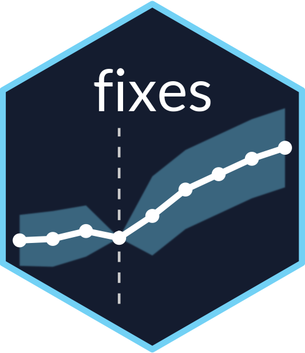
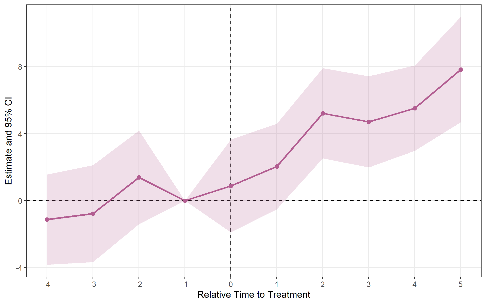
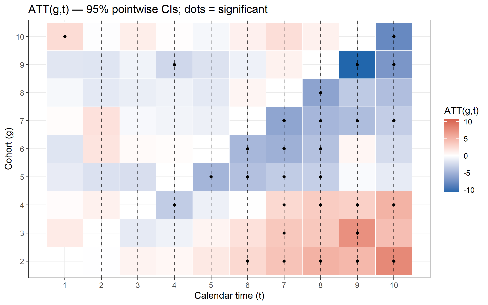
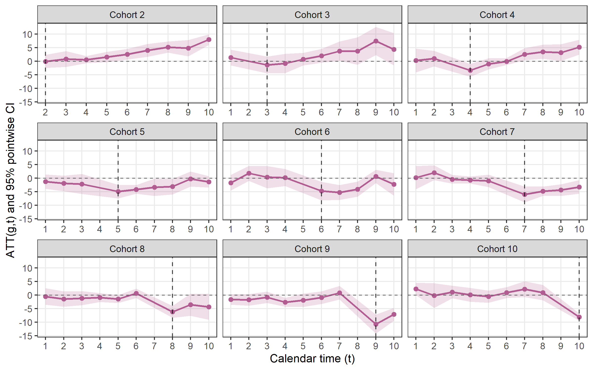
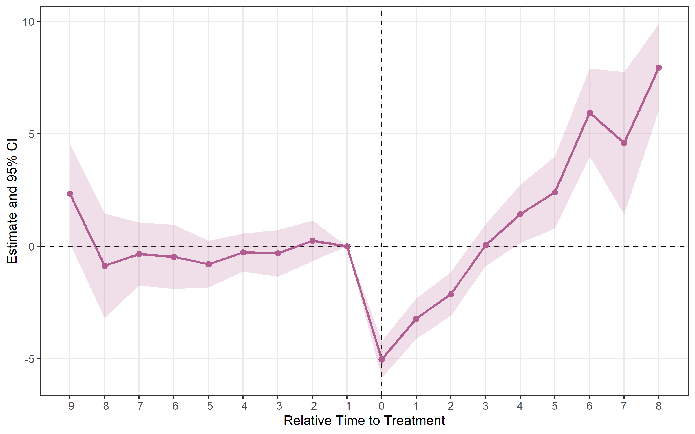
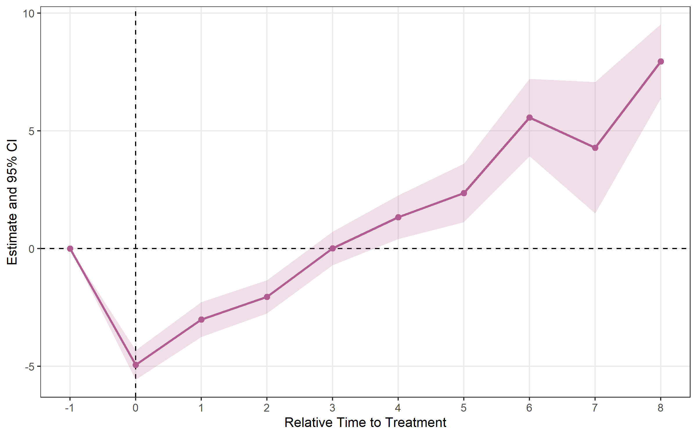
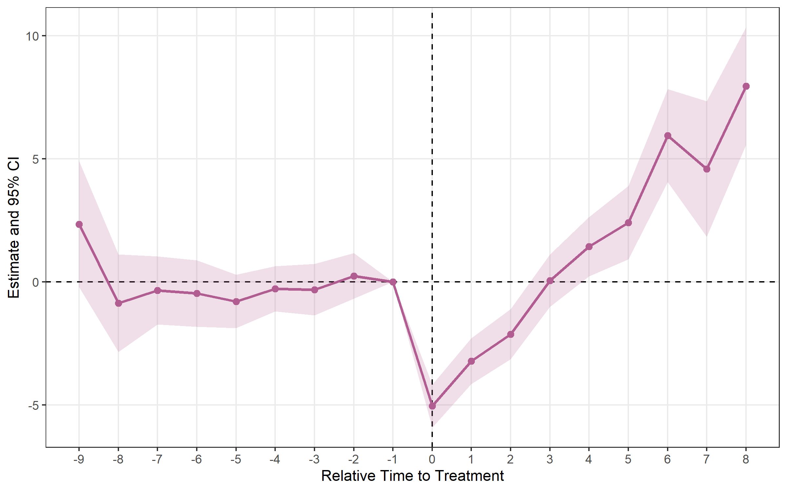
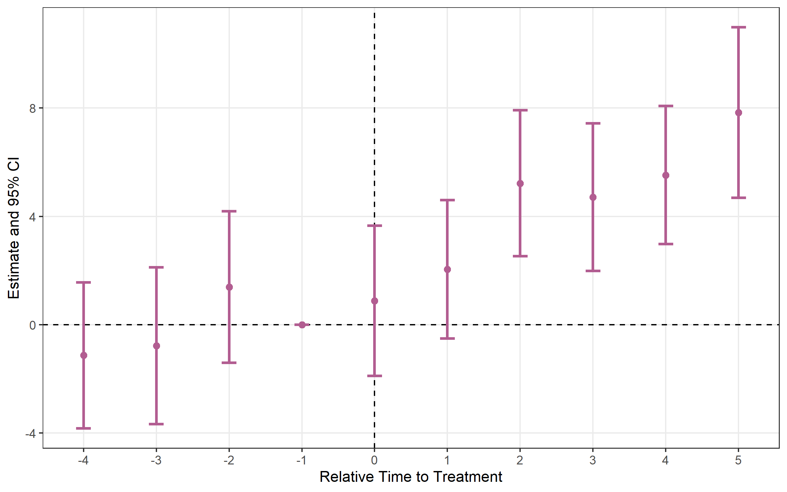
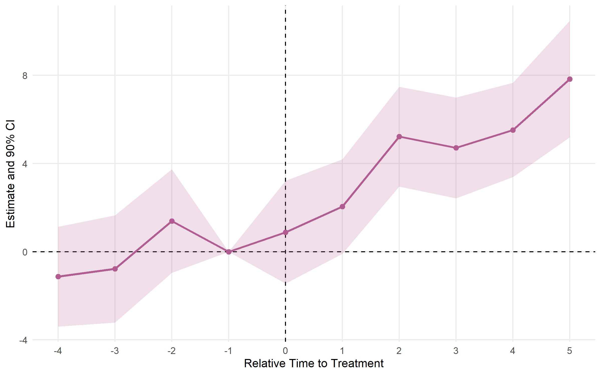

fixes 
Overview
fixes is an R package for difference-in-differences estimation in panel data. It covers the three stages of a modern DiD workflow:
| Stage | Function | What it does |
|---|---|---|
| 1. Event study | run_es() |
Dynamic treatment effects by relative time (6 estimators) |
| 2. ATT aggregation | calc_att() |
Aggregated ATT — overall, by cohort, by calendar time |
| 3. Basic DiD | run_did() |
Single-coefficient TWFE DiD with modelsummary support |
| 4. Sensitivity | honest_sensitivity() |
Robust inference under violations of parallel trends (Rambachan & Roth 2023) |
| Visualisation | plot_es() |
Static ggplot2 event study plot |
| Visualisation | plot_att_gt() |
ATT(g,t) heatmap / facet plot (CS estimator) |
| Visualisation | plot_es_interactive() |
Interactive plotly plot with hover tooltips |
| Visualisation | plot_honest() |
Sensitivity plot of robust CIs vs. restriction size |
Estimators (selected via the estimator argument in run_es() and calc_att()):
estimator |
Reference | Best for |
|---|---|---|
"twfe" |
Classic TWFE | Universal treatment timing |
"cs" |
Callaway & Sant’Anna (2021) | Staggered adoption |
"sa" |
Sun & Abraham (2021) | Staggered adoption |
"bjs" |
Borusyak, Jaravel & Spiess (2024) | Staggered adoption |
"twm" |
Wooldridge (2025) | Staggered adoption; optional cohort trends |
"flex" |
Deb, Norton, Wooldridge & Zabel (2024) | Repeated cross-section data |
Installation
# From CRAN
install.packages("fixes")
# Development version
pak::pak("yo5uke/fixes")Basic DiD — run_did()
For a simple two-way FE DiD with a single treatment coefficient, use run_did(). Output is fully compatible with modelsummary::modelsummary() and tinytable::tt().
There are two equivalent ways to specify the treatment:
# Option A: supply a pre-built D_it indicator
df$D <- as.integer(df$treated & df$year >= 2006)
res <- run_did(df, outcome = y, treatment = D, fe = ~ id + year)
# Option B: let run_did() construct D_it from group indicator + timing
res <- run_did(df, outcome = y, treatment = treated,
time = year, timing = 2006,
fe = ~ id + year)Both options produce a did_result object:
df <- fixest::base_did
# Build a universal-timing DiD dataset
df$D <- as.integer(df$treat == 1 & df$period >= 5)
res <- run_did(
data = df,
outcome = y,
treatment = D,
fe = ~ id + period,
cluster = ~ id
)
print(res)## DiD Estimation [TWFE]
## N = 1080 obs | 330 treated obs
## FE: id + period
## VCOV: cluster | Cluster: id
##
## term estimate std.error statistic p.value
## 1 D 4.5 0.544 8.27 3.94e-13run_did() integrates with the broom and modelsummary ecosystems:
broom::tidy(res) # all coefficients (treatment + any covariates)
broom::glance(res) # nobs, within R², AIC, ...
modelsummary::modelsummary(res) # regression table via tinytableEvent study — run_es()
All six estimators share the same interface.
Classic TWFE (single treatment date)
Use run_es() with a fixed event date. Here we use fixest::base_did, a balanced panel where all units are treated at period 5.
es <- run_es(
data = df,
outcome = y,
treatment = treat,
time = period,
timing = 5,
fe = ~ id + period,
cluster = ~ id,
baseline = -1
)
print(es)## Event Study Result (fixes)
## N: 1080 | Units: NA | Treated units: 1080 | Never-treated: NA
## FE: id + period
## VCOV: cluster | Cluster: id
## Method: classic | lead_range: 4 lag_range: 5 baseline: -1
plot_es(es)
Staggered adoption
When units adopt treatment at different times, the classic TWFE estimator can be biased. fixes provides modern alternatives.
Setup: fixest::base_stagg — never-treated units have NA timing.
df_stagg <- fixest::base_stagg
df_stagg$timing <- df_stagg$year_treated
df_stagg$timing[df_stagg$year_treated == 10000] <- NACallaway & Sant’Anna (2021) — estimator = "cs"
cs <- run_es(
data = df_stagg,
outcome = y,
time = year,
timing = timing,
unit = id,
staggered = TRUE,
estimator = "cs",
control_group = "nevertreated"
)
print(cs)## Event Study Result (fixes)
## N: 950 | Units: 95 | Treated units: 45 | Never-treated: 50
## FE:
## VCOV: analytic | Cluster: -
## Method: classic | lead_range: 9 lag_range: 8 baseline: -1
plot_es(cs)Visualise the full ATT(g,t) matrix
plot_att_gt(cs, type = "heatmap")
plot_att_gt(cs, type = "facet")
Sun & Abraham (2021) — estimator = "sa"
sa <- run_es(
data = df_stagg,
outcome = y,
treatment = treated,
time = year,
timing = timing,
unit = id,
fe = ~ id + year,
staggered = TRUE,
estimator = "sa",
cluster = ~ id
)
print(sa)## Event Study Result (fixes)
## N: 950 | Units: 95 | Treated units: 45 | Never-treated: 50
## FE: id + year
## VCOV: HC1 | Cluster: id
## Method: classic | lead_range: 9 lag_range: 8 baseline: -1
plot_es(sa)
Borusyak, Jaravel & Spiess (2024) — estimator = "bjs"
bjs <- run_es(
data = df_stagg,
outcome = y,
time = year,
timing = timing,
unit = id,
staggered = TRUE,
estimator = "bjs"
)
print(bjs)## Event Study Result (fixes)
## N: 950 | Units: 95 | Treated units: 45 | Never-treated: 50
## FE: id + year
## VCOV: bjs_conservative | Cluster: -
## Method: classic | lead_range: 1 lag_range: 8 baseline: -1
plot_es(bjs)
Wooldridge (2025) Two-Way Mundlak — estimator = "twm"
Algebraically equivalent to Sun-Abraham in the base case. trends = TRUE adds cohort-specific linear trend regressors to absorb differential pre-trends (output shows relative_time ≥ 0 only).
twm <- run_es(
data = df_stagg,
outcome = y,
time = year,
timing = timing,
unit = id,
fe = ~ id + year,
staggered = TRUE,
estimator = "twm"
)
print(twm)## Event Study Result (fixes)
## N: 950 | Units: 95 | Treated units: 45 | Never-treated: 50
## FE: id + year
## VCOV: HC1 | Cluster: -
## Method: classic | lead_range: 9 lag_range: 8 baseline: -1
plot_es(twm)
Deb, Norton, Wooldridge & Zabel (2024) FLEX — estimator = "flex"
Designed for repeated cross-section data (different individuals each period). Requires a group argument identifying the treatment group each observation belongs to.
flex <- run_es(
data = df_rcs,
outcome = y,
time = year,
timing = timing,
group = group_id,
staggered = TRUE,
estimator = "flex"
)
plot_es(flex)ATT aggregation — calc_att()
After estimating run_es() with a staggered estimator, calc_att() computes a single aggregated ATT — or one per cohort / per calendar period.
# Overall ATT
att_simple <- calc_att(
data = df_stagg,
outcome = y,
time = year,
timing = timing,
unit = id,
estimator = "cs",
aggregation = "simple"
)
print(att_simple)## ATT Estimation [estimator: CS | aggregation: Simple (overall)]
## N = 950 obs | 95 units | 45 treated
##
## group estimate std.error statistic p.value conf_low_95 conf_high_95
## 1 NA -0.755 0.226 -3.35 0.000813 -1.2 -0.313
# Per-cohort ATT
calc_att(df_stagg, y, year, timing, unit = id,
estimator = "cs", aggregation = "by_cohort")
# Per-calendar-period ATT
calc_att(df_stagg, y, year, timing, unit = id,
estimator = "cs", aggregation = "by_time")Supported estimators for calc_att(): "cs" (Callaway-Sant’Anna 2021) and "bjs" (Borusyak et al. 2024).
Bootstrap simultaneous confidence bands
Pointwise CIs control error rates one period at a time. When you plot 15 pre- and post-treatment estimates, the joint false-positive rate may exceed 5 %. Simultaneous bands (Callaway & Sant’Anna 2021, Corollary 1) provide joint coverage across the entire event-study curve.
cs_boot <- run_es(
data = df_stagg,
outcome = y,
time = year,
timing = timing,
unit = id,
staggered = TRUE,
estimator = "cs",
control_group = "nevertreated",
bootstrap = TRUE,
B = 999,
boot_seed = 42
)
# Lighter outer band = simultaneous CI; darker inner band = pointwise CI
plot_es(cs_boot, show_simultaneous = TRUE)
plot_es_interactive(cs_boot, show_simultaneous = TRUE)Honest sensitivity analysis — honest_sensitivity()
Event-study estimates rely on the parallel trends assumption. Rather than testing pre-trends and hoping for the best, honest_sensitivity() implements Rambachan & Roth (2023): it reports confidence sets for a post-treatment effect under progressively weaker restrictions on how different post-treatment violations of parallel trends can be from the pre-trends, plus a breakdown value — the largest violation at which the effect is still significant.
res <- run_es(df, outcome = y, treatment = treat, time = year, timing = 6,
fe = ~ id + year)
# Relative-magnitude restriction: post violation <= Mbar x max pre violation
h <- honest_sensitivity(res, type = "relative_magnitude",
Mvec = c(0, 0.5, 1, 1.5, 2))
print(h) # robust CIs per Mbar + the original (parallel-trends) CI
plot_honest(h) # "top-down" sensitivity plotUse type = "smoothness" for the (bounded second difference) restriction. Inference uses the Andrews-Roth-Pakes conditional test — a pure-R reimplementation validated against the HonestDiD package. For estimators other than "twfe", pass betahat and sigma directly. The numeric helpers (lpSolveAPI, Rglpk, TruncatedNormal, Matrix, pracma) are optional Suggests.
Plotting options
plot_es() works with results from any estimator.
plot_es(es, type = "errorbar")
es_multi <- run_es(
data = df,
outcome = y,
treatment = treat,
time = period,
timing = 5,
fe = ~ id + period,
cluster = ~ id,
conf.level = c(0.90, 0.95, 0.99)
)
plot_es(es_multi, ci_level = 0.90, theme_style = "minimal")
Key arguments
run_did()
| Argument | Default | Description |
|---|---|---|
data |
— | Data frame (panel) |
outcome |
— | Outcome variable (unquoted; expressions like log(y) OK) |
treatment |
— | Binary D_it indicator, or group dummy when timing is set |
timing |
NULL |
Scalar treatment period; auto-constructs D_it = treatment*(time>=timing)
|
fe |
NULL |
FE formula ~ id + year; auto-inferred from unit + time if omitted |
unit |
NULL |
Unit identifier (for FE inference and sample-size metadata) |
time |
NULL |
Time variable (for FE inference and timing-based D_it construction) |
covariates |
NULL |
Additional controls, e.g. ~ x1 + x2
|
cluster |
NULL |
Clustering: formula ~ id, column name, or vector |
conf.level |
0.95 |
CI level(s); vector allowed |
vcov |
"HC1" |
VCOV type; cluster-robust SE used automatically when cluster is set |
run_es()
| Argument | Default | Description |
|---|---|---|
data |
— | Data frame (panel or RCS) |
outcome |
— | Outcome variable (unquoted) |
treatment |
NULL |
0/1 treatment dummy ("twfe" only) |
time |
— | Time variable (numeric) |
timing |
— | Treatment date (scalar for "twfe", column for others; NA = never treated) |
unit |
NULL |
Unit ID (required for "cs", "sa", "bjs", "twm") |
fe |
NULL |
Fixed effects formula, e.g. ~ id + year
|
estimator |
"twfe" |
"twfe", "cs", "sa", "bjs", "twm", or "flex"
|
staggered |
FALSE |
Set TRUE for unit-varying treatment timing |
group |
NULL |
FLEX only: treatment group identifier |
trends |
FALSE |
TWM only: cohort-specific linear trends |
covariates |
NULL |
Controls (supported for "twm" and "flex") |
control_group |
"nevertreated" |
CS only: "nevertreated" or "notyettreated"
|
cluster |
NULL |
Clustering formula, e.g. ~ id
|
baseline |
-1 |
Reference period |
conf.level |
0.95 |
CI level(s); vector allowed |
vcov |
"HC1" |
VCOV type |
bootstrap |
FALSE |
CS only: multiplier bootstrap for simultaneous CIs |
B |
999 |
Bootstrap draws |
boot_seed |
NULL |
Bootstrap RNG seed |
calc_att()
| Argument | Default | Description |
|---|---|---|
data |
— | Data frame (panel) |
outcome |
— | Outcome variable (unquoted) |
time |
— | Calendar time variable |
timing |
— | First treatment period per unit; NA = never treated |
unit |
— | Unit identifier (required) |
estimator |
"cs" |
"cs" or "bjs"
|
aggregation |
"simple" |
"simple", "by_cohort", or "by_time"
|
control_group |
"nevertreated" |
CS only |
conf.level |
0.95 |
CI level(s) |
Contributing
Found a bug or have a feature request? Open an issue on GitHub.